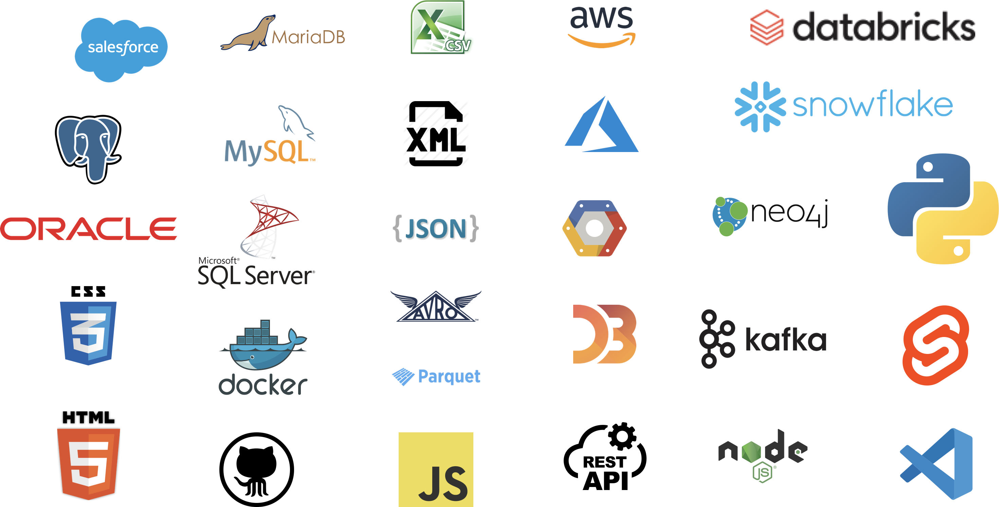

why i am different
Scroll
Communicate - First, I excel at making complex topics more palatable for customer consumption. I start with why and I treat the sales process more as a learning process for customers to not only understand our solution but to better comprehend the underlying technology. This leads to a better decision making process for the customer, they relax and we begin our trusted advisor relationship.
for example, in the context of showing a Data governance solution, I tell customers : “You know ten or so years from now when we are no longer here and there is a new technology on the block, you are going to want to leave a legacy that makes it easier to transition to the new technology. How? With our solution You will be able to export all of your hard work and import it into your next technology.”
this customer empathy helps drive Revenue and customer satisfaction and helps start a trusting relationship.
Communicate - I focus on my written communication skills. I just finished the book, "smart brevity" and i am now applying the principles I learned from it. You may see some examples of my writing on my portfolio website. My presentation style is relaxed and I try to be memorable. For example, after a day long technical presentation to the evaluation committee of a US federal reserve bank, we were asked, "where is the next Bill show?" Just goes to show you that even bankers can contribute to the fun during a software evaluation. (Yes, we won the deal.)
Curious - An important skill that sets me apart from other candidates is I am intellectually curious and not only want to learn new things but I thrive on it. I have a genuine interest in this position and want to learn more. I am continuously trying to improve my presentation and sales skills.
For example, the best color to wear on a zoom call is blue. No stripes. Use a pointer or marker on the screen to draw your audience's eyes to what you want them to focus on. Have your head centered in the middle one-third of the screen and have your camera at eye level so you are looking straight at them, not down, or to the side or up. These are some of the tidbits that I learned to improve my presentation skills.
Problem solver - I enjoy solving problems. even in the best of jobs problems will arise. The ability to solve these problems correctly and efficiently makes for a great employee and I consider myself such a person. Sure, there will be some problems that I will need to take to my boss or a fellow team mate but I try to solve it first prior to seeking help.
Leader - I lead. Once i am trained and i have shadowed several other demonstrations, my hand will not need to be held through every little task and I am capable of leading others as well. I am independent and will excel in my role. I possess a great deal of motivation; I like being a rock star and I like helping others become rock stars. The more the merrier.
Work ethic - as I mentioned previously I am driven to work hard. This trait is extremely valuable to the team. I don't have any qualms about spending the time to get something done. You do what you have to do to generate revenue.
Plays well with others - not only am I a leader but I work well with a team. I know how to listen as much as I contribute and I take on my share of the workload to make sure we are all moving towards our common goals.
Here are a few of the technologies with which I am acquainted...

Humor - I am fortunate to possess a fairly robust sense of humor. Let me tell a few stories to illustrate.
I was getting ready to perform a software demonstration at a conference and a coworker was introducing me to a group of about forty people, saying, "Bill will login as Lisa and do X and then login as George and do Y and then login as Robin and do Z." I stepped up to the podium and on the spur of the moment, I said, "Hi, I'm Bill Indest and I suffer from a multiple personality disorder." Much to my surprise the entire room erupted in laughter.
Here is another example. We were on an internal team conference call (I wouldn't have said this on a customer call) and someone's big dog barked deeply and I immediately said,"Sorry, that's my wife" and everyone cracked up. To this day, we reminisce about that call and laugh. And of course my wife knows of my antics.
Finally, here are some life rules that I try to follow: 🚀
do not speak poorly about others
'I can' trumps IQ
you do not need a title to lead
always meet deadlines
deliver outside your job description
keep up with technology
share the credit
measure outcomes
share your intent
stop chasing shortcuts; do the work
learn to anticipate
maintain a positive outlook
invest in yourself
lift others and you become the
ladder
learn customer service
learn and appreciate the art of storytelling
The beginning . . .